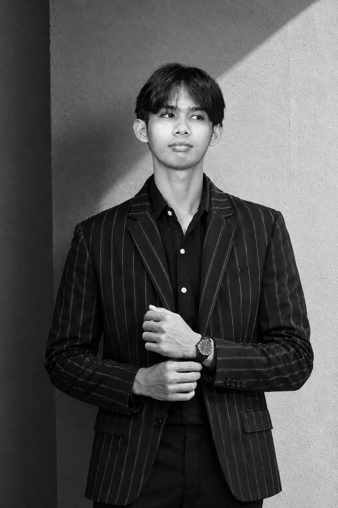
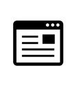

End-to-End User Experience Design, Intuitive User Flows & Interface Design, Wireframing & Prototyping, Usability Testing
Open to work
I turn complex problems into simple digital experiences.
UI/UX Designer balancing user needs, business goals, and thoughtful visual design.
chedrickivansalazar@gmail.com
Turning ideas into seamless interfaces.
My tech stack

- VS
- Vi
- UI/UX Design & Design System
- User Experience Strategy
- Web Interface Design

Wireframing and Prototyping- User Research & Usability Testing
Design that connects users with their goals.
Chedrick Ivan Salazar
UI/UX Designer
Education
BS Information SystemsUniversity of Batangas
I bridge the gap between user needs and thoughtful UI/UX design. As a Bachelor of Science in Information Systems graduate from the University of Batangas, my background combines technology, problem-solving, and design thinking, which gives me a practical perspective on building products people actually use.
I focus on transforming ideas and user requirements into clear, engaging, and meaningful experiences. Through user research, user flows, wireframing, prototyping, and visual interface design, I turn complex requirements into simple, intuitive solutions that put the user at the center.
I believe great design starts with understanding the people who use it. I value empathy, attention to detail, continuous learning, teamwork, and effective communication throughout the design process, and I’m always eager to take on design challenges that make products useful, accessible, and enjoyable.
Core Expertise
User Interface Design, User Experience Design, Design Systems, Wireframing & Prototyping, User Flow Design, Usability Testing
Core skills, technical stack, and tools.
User Flow Mapping, Information Architecture, Process Mapping, System Diagrams & User Journey Visualization
Lucidchart
Basic Web Structure, Semantic HTML, CSS Styling, Layout Design & Visual Interface Implementation
VSVisual Studio Code
Website Design, Page Layout Creation, Content Management, Theme Customization & User-Friendly Web Experiences
WordPress
AI-Assisted UI Design, Wireframing, Rapid Prototyping, Screen Generation & User Flow Visualization
ViVisily
Visual Design, Social Media Graphics, Presentation Design, Marketing Materials & Creative Content
Canva
User-centered design.
Meaningful experiences.
I design around user needs, clear interactions, and purposeful visual design. The result: interfaces that are easy to understand, engaging to use, and consistent from screen to screen.
User-Centered Design
Research-driven interfaces designed around real user needs and behaviors.
Clear Interaction
Navigation and interactions that make complex flows easier to understand.
High-Fidelity Prototypes
Polished interfaces and interactive prototypes that clearly communicate the intended experience.
Selected works
What I’ve Designed
Certifications & Professional Credentials
View All
Google UX Design
Earned the Google UX Design Professional Certificate (8 courses) from Google on Coursera, covering the end-to-end UX design process: user research, wireframing, high-fidelity prototyping in Figma, and usability testing.
View Certificate
Generative AI for UI UX Design
September 24, 2026
IBM
IBM UI/UX Designer
IBM & SkillUp on Coursera · 7 courses